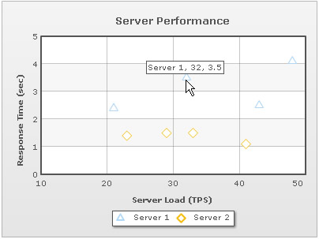
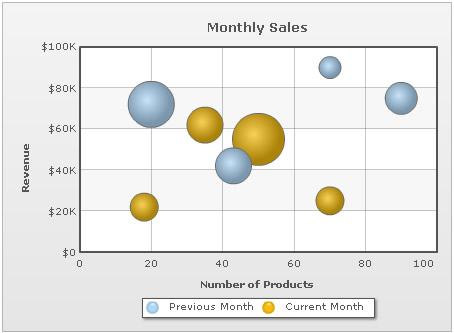

| Creating Scatter and Bubble Chart | ||||||||||||||||||||||||||||||||||||
Now, let's create a simple Scatter chart that will visually display the Server Performance with reference to Server-Load against Response Time. Server Load and Response Time will be plotted against x-axis and y-axis respectively. | ||||||||||||||||||||||||||||||||||||
|
||||||||||||||||||||||||||||||||||||
| Let's see how to use FusionCharts PHP Class to plot this data into a Scatter chart: | ||||||||||||||||||||||||||||||||||||
<?php
# Include FusionCharts PHP Class
include("../Class/FusionCharts_Gen.php");
# Create Scatter chart Object
$FC = new FusionCharts("Scatter","300","250");
# set the relative path of the SWF file
$FC->setSwfPath("../FusionCharts/");
# Define chart attributes
$strParam="caption=Server Performance;yAxisName=Response Time (sec);xAxisName=Server Load (TPS)";
# Set chart attributes
$FC->setChartParams($strParam);
# Add Category, 1st parameter take label and 2nd parameter takes x axis value
# as parameter list
$FC->addCategory("10","x=10;showVerticalLine=1");
$FC->addCategory("20","x=20;showVerticalLine=1");
$FC->addCategory("30","x=30;showVerticalLine=1");
$FC->addCategory("40","x=40;showVerticalLine=1");
$FC->addCategory("50","x=50");
# Add a new dataset
$FC->addDataSet("Server 1","anchorRadius=6");
# Add chart data for the above dataset
# where 1st parameter for X axis value
# 2nd parameter take Y axis as parameter list
# e.g. y=27
$FC->addChartData("21","y=2.4");
$FC->addChartData("32","y=3.5");
$FC->addChartData("43","y=2.5");
$FC->addChartData("48","y=4.1");
# Add another dataset
$FC->addDataSet("Server 2","anchorRadius=6");
# Add chart data for the above dataset
# where 1st parameter for X axis value
# 2nd parameter take Y axis as parameter list
# e.g. y=30
$FC->addChartData("23","y=1.4");
$FC->addChartData("29","y=1.5");
$FC->addChartData("33","y=1.5");
$FC->addChartData("41","y=1.1");
?>
<html>
<head>
<title>Scatter Chart : FusionCharts PHP Class</title>
<script language='javascript' src='../FusionCharts/FusionCharts.js'></script>
</head>
<body>
<?php
# Render Chart
$FC->renderChart();
?>
</body>
</html>
|
||||||||||||||||||||||||||||||||||||
Let's analyze the steps involved in the above code:
|
||||||||||||||||||||||||||||||||||||
Here is the Scatter chart that our FusionCharts PHP Class renders: |
||||||||||||||||||||||||||||||||||||
|  | ||||||||||||||||||||||||||||||||||||
| Please go through the FusionCharts PHP Class API Reference section to know more about the functions used in the above code. | ||||||||||||||||||||||||||||||||||||
| Creating the BubbleChart | ||||||||||||||||||||||||||||||||||||
|
Now, let's create yet another chart called Bubble chart that will visually display the Revenue earned in two consecutive months (Previous Month and Current Month) for the No. of products. It will also depict the market share of the related number of products. |
||||||||||||||||||||||||||||||||||||
|
||||||||||||||||||||||||||||||||||||
| Let's see how to use FusionCharts PHP Class to plot this data into a Bubble chart: | ||||||||||||||||||||||||||||||||||||
<?php
# Include FusionCharts PHP Class
include("../Class/FusionCharts_Gen.php");
# Create Bubble chart Object
$FC = new FusionCharts("bubble","450","350");
# set the relative path of the SWF file
$FC->setSwfPath("../FusionCharts/");
# Define chart attributes
$strParam="caption=Monthly Sales;xAxisName=Number of Products;yAxisName=Revenue;
numberPrefix=$;decimalPrecision=0;formatNumberScale=1";
# Set chart attributes
$FC->setChartParams($strParam);
# Add Category, 1st parameter take label and 2nd parameter takes x axis value
# as parameter list
$FC->addCategory("0","x=0;showVerticalLine=1");
$FC->addCategory("20","x=20;showVerticalLine=1");
$FC->addCategory("40","x=40;showVerticalLine=1");
$FC->addCategory("60","x=60;showVerticalLine=1");
$FC->addCategory("80","x=80;showVerticalLine=1");
$FC->addCategory("100","x=100;showVerticalLine=1");
# Add a new dataset
$FC->addDataSet("Previous Month");
# Add chart data for the above dataset
# where 1st parameter for X axis value
# 2nd parameter take Y and Z axis as parameter list
# e.g. y=12200;z=10
$FC->addChartData("20","y=72000;z=8");
$FC->addChartData("43","y=42000;z=5");
$FC->addChartData("70","y=90000;z=2");
$FC->addChartData("90","y=75000;z=4");
# Add another dataset
$FC->addDataSet("Current Month");
# Add chart data for the above dataset
# where 1st parameter for X axis value
# 2nd parameter take Y and Z axis as parameter list
# e.g. y=12200;z=10
$FC->addChartData("18","y=22000;z=3");
$FC->addChartData("35","y=62000;z=5");
$FC->addChartData("50","y=55000;z=10");
$FC->addChartData("70","y=25000;z=3");
?>
<html>
<head>
<title>Bubble Chart : Using FusionCharts PHP Class</title>
<script language='javascript' src='../FusionCharts/FusionCharts.js'></script>
</head>
<body>
<?php
# Render Chart
$FC->renderChart();
?>
</body>
</html>
|
||||||||||||||||||||||||||||||||||||
Let's analyze the steps involved in the above code:
|
||||||||||||||||||||||||||||||||||||
Here is the Bubble chart that our FusionCharts PHP Class renders: |
||||||||||||||||||||||||||||||||||||
|  | ||||||||||||||||||||||||||||||||||||